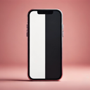

You can turn on NightRiding’s Safari extension in Settings.
NightRiding’s extension is currently off.
NightRiding’s extension is on. Dark mode for every site — enjoy!
In the Settings app that just opened:
You can turn on NightRiding’s extension in Safari Extensions preferences.
NightRiding’s extension is currently on. You can turn it off in Safari Extensions preferences.
NightRiding’s extension is currently off. You can turn it on in Safari Extensions preferences.